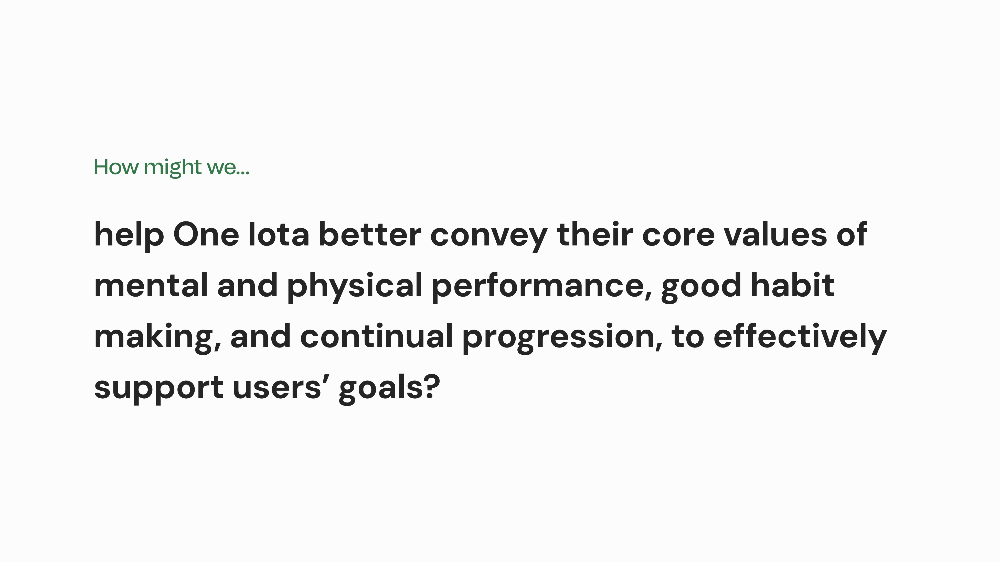

One Iota Training Library
Equipping golfers with personalized training through data analysis and actionable insights.
OVERVIEW
Timeline
3 months (Sep - Dec 2023)
Team
Isabelle Louie, Maxwell Chen, Elvis Hsiao, Claire Lovan, Holly Lam
Toolkit
Figma, Miro, Zoom, SurveyMonkey, Premiere Pro
Role
As a UX Researcher, I conducted user interviews, online surveys, journey mapping, and co-hosted a participatory workshop to understand the needs of amateur and professional golfers. I also wrote and produced a video to highlight the context of use for our concept, the One Iota Training Library.
Deliverables
The final deliverables included a prototype of the proposed feature, a concept guide, a concept video, and a client presentation.
Status
One Iota is currently developing and implementing our recommendation on both their mobile and desktop platforms.
Featured In
This project was featured in the SIAT Fall 2023 Showcase.
INTRODUCTION
Context
This project was completed as part of a senior level interaction design course at Simon Fraser University. The objective was to partner with a local business to analyze the interactions within their products, services, or operations, and to design a technology solution to improve some area of process.
Process Overview
STARTING POINT
The Client
One Iota Performance Inc, a golf analytics company in Vancouver, BC.
Launched in 2023, One Iota Performance is a golf analytics platform that provides avid golfers with data-driven insights to analyze and improve their game. Through the desktop and mobile apps, athletes can input data about each round, reflect on their mental and physical performance, and uncover their strengths and weaknesses.
With so many golf analytics apps on the market, One Iota aims to differentiate itself by placing equal emphasis on mental and physical performance, encouraging good habit making, and equipping golfers with the tools to make continual progress, one iota at a time.
The Challenge
Investigating the onboarding process' high drop-off rate.
In our initial meeting, our client noted that many new users were dropping off during the onboarding process, so our team decided to explore this issue further. Was the onboarding process too complicated? Is the key value not communicated effectively? Or are there any other factors at play?
The Plan
A double diamond approach: designing the right thing before designing things right.
Our team decided to begin with exploratory user research to gain an ethnographic understanding of the habits, needs, and pain points of professional and amateur golfers.
Based on our findings, our team then conducted several rounds of concept exploration and refinement, incorporating feedback and critique from key stakeholders, to ensure the final product met both business requirements and user needs.
EXPLORATORY RESEARCH
User Interviews and Surveys
Understanding existing perceptions and experiences with performance tracking apps.
To start off our research, our team conducted ride-along interviews with one amateur and two competitive golfers to observe their experiences with One Iota’s onboarding process and user interface first-hand.
I also designed an online survey to gain broader insight into golfers’ existing perceptions and experiences with performance tracking apps in general, reaching 58 participants.
INSIGHT #1
Mental performance is a very high priority for dedicated golfers
"Mental performance has a direct impact on my execution ability and outcome." – Professional Golfer
"If your mental goes boom during a round, you tend to make bad course management decisions and experience technical breakdowns in your swing." – Amateur Golfer
INSIGHT #2
Users want to understand their weaknesses, but don't always know how to improve
Performance trends can help users see where their game is lacking, but 50% of One Iota users do not have a coach and need guidance on how they can improve.
"[The One Iota app] helps me recognize where to improve but I rarely act on the conclusions" – Amateur Golfer
INSIGHT #3
The onboarding process is tedious but easily fixable
Although the onboarding process was tedious, with users having to go through a series of long tutorial videos, this seemed to be more of an information design problem and not the root cause of One Iota's low user conversion and retention.
📌 Personal Takeaways
We didn’t know much about golfers... or golf, but ethnographic research opened our eyes.
Initially, our team did not have enough golf knowledge to understand whether One Iota’s existing features provided value to users. However, in-depth conversations and observational ride-alongs with golfers unveiled a deeper understanding of golf culture, including an unspoken rule of not using cell phones on the course, and a common drive for improvement and excellence.
SYNTHESIZING KEY FINDINGS
User Personas
Focusing on dedicated amateur and aspiring professional golfers.
Upon analyzing our initial research and examining the demographics and psychographics of One Iota's current users, two main user groups emerged: the Dedicated Amateur and the Aspiring Pro.

Journey Maps
Mapping the experiences of our personas to identify design opportunities.
To better visualize our opportunities to intervene, I created two journey maps to outline the actions, challenges, and emotional impact that our personas would face when using One Iota's app, from deciding to play a round of golf to creating their action plan for improving their game afterwards.


Key Findings
Both user groups shared three main challenges in their journey.
PAIN POINT #1
Generating large amount of statistics can lead to information overload
When users are presented with every possible statistic on their game, it can be difficult to pinpoint the most relevant information to their growth and development.
PAIN POINT #2
The current mental performance analysis is difficult to interpret
After each round of golf, users complete a mental performance reflection survey. The app analyzes their responses and produces a mental performance score based on several aspects, such as concentration and positive thinking. However, users only receive the score (i.e., 70/100), and it is difficult to interpret what this number actually means.
PAIN POINT #3
Highlighting weaknesses is meaningless without offering resources for improvement
Users need to know how to act on their weaknesses in order to improve. Currently, users must either share the app's analysis with their coach or find resources on their own to create an action plan for addressing their weaknesses.
NARROWING OUR DESIGN FOCUS
The Guiding Question
Based on our exploratory and ethnographic research, along with the challenges and intervention opportunities identified in our personas and journey maps, our team came up with the following design focus:
DESIGN EXPLORATION
Concept Ideation
Generating three concepts to address current pain points.
Guided by our design focus, our team explored three concept directions: a customizable dashboard, a lesson library, and a mindfulness training platform. For each idea, we created a concept poster and storyboard to illustrate the benefits to each persona and its incorporation into their user journeys.
Concept posters (click to expand)
Concept storyboards (click to expand)
VALIDATION AND REFINEMENT
Participatory Workshop
Co-hosted a 1.5 hour long workshop on Zoom and Miro with five stakeholders to validate and refine our concepts.
Key Questions
- Is One Iota effectively communicating their core values to their users?
- Are One Iota users’ needs being met and are the current/proposed features in line with their values?
- What would it take to make users of competing apps switch to One Iota?
Participants
- 2 Current One Iota users (one amateur and one professional golfer)
- 1 One Iota developer
- 1 Mental training coach for SFU Golf
- 1 User of a competing golf app
Activities
- An Idea Sprint was used to quickly determine the top five factors influencing user decisions to choose or switch to a different golf performance tracking app. This provided an open-ended way to discover what qualities were most important to users.
- The Brand Identity Moodboard activity provided a comparison between how One Iota wants to be perceived and how they are currently perceived by current and prospective users.
- The final Feature Ranking activity helped our team gauge which existing and proposed features were most valuable to each of our user groups.
Key Findings
INSIGHT #1
Users want actionable steps to reach their goals.
INSIGHT #2
One Iota and its users were aligned on the importance of mental performance.
INSIGHT #3
Mental training was priority for professional golfers and the lesson library was valuable to amateur golfers.
FINAL SOLUTION
The One Iota Training Library
A comprehensive collection of physical drills and mental exercises to develop and improve all aspects of your golf game.
Drawing on insights from our stakeholder workshop, our team evolved our concept into a unified training library, offering mental and technical training within a single, comprehensive platform.
I developed a concept poster and storyboard for the Training Library, emphasizing its advantages for our user groups and its significant impact on the user journey.

This concept was then presented to our client, who was delighted with its alignment with the company’s core values, business objectives, and user requirements. This gave our team the green light to move forward with creating a high-fidelity prototype in Figma.
FINAL DELIVERABLES
Experience the Final Prototype
Concept Video
Showcasing key features, user benefits, and use-case scenarios.
To conclude this project, I created a product video to illustrate the key features of our application and showcase the context in which it would be used.
REFLECTION
Final Thoughts
Ethnographic research can uncover unique opportunities and challenges, especially when designing for an unfamiliar user group.
One of the key challenges in this project was my unfamiliarity with the sport of golf, as I did not have any background knowledge on the habits and needs of golfers and the nuances of the sport.
This created a fantastic opportunity to leverage my existing research experience in designing surveys and conducting interviews, while gaining new skills in running stakeholder workshops and crafting in-depth user journey maps.
This project was such a fun experience, and the opportunity to help a local start-up company further develop their product and strengthen their market position was extremely rewarding, further affirming my interest in pursuing a career in user experience research!
NEXT CASE STUDY
UX RESEARCH / WEB DESIGN
Bonus Bakery: Website Evaluation and Redesign
Creating a robust online experience to streamline orders through a single platform.